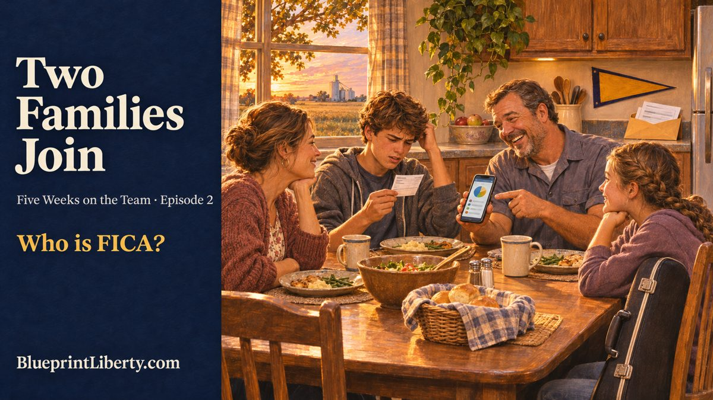

← Runtime Republic · Five Weeks on the Team
Five Weeks on the Team · Episode 2 of 10 · about 7 minutes · Draft under review

Six weeks after Maria, Dale and Ruth closed their first week, two families joined the team on the same Sunday. The team had grown by word of mouth, the way most things in a town do. Ruth had told her neighbor. Dale had told a customer. Neither family knew what they were walking into.
Jake and Brittany Lewis are a young family of four. Jake works nights at a distribution center. Brittany had been home with their two children, a four-year-old named Mason and a baby girl named Lily, and was about to go back to work part time at a dental office. Their budget was tight in the way young families know too well. Every month ended a few dollars short, and every month they told each other next month would be different.
Tom and Karen Reyes are a family of five. Tom is a maintenance supervisor at a hospital. Karen manages the front office at a church. Their daughter Ava is thirteen and in middle school. Their son Luke is sixteen and in high school, with a driver's license and opinions about everything. Their oldest, Sam, is nineteen and in his second year at a state university two hours away. The Reyes family had more income than the Lewises, and somehow less room. Three children at three stages of school is three different sets of bills.
The first week went the way it goes for everyone. Pay stubs photographed, accounts linked, one question at a time. But both families hit something the first three members never had to face: children change everything about the numbers.
For the Lewises, the first life event arrived in week one. Brittany started her new job. Her first pay stub showed up on her phone, and the app walked her through it line by line. Federal income tax, Social Security, Medicare, Kansas income tax, all taken before the money reached her. Then the app asked a question neither of them had thought to ask. With Brittany back at work, who would watch Lily? The day care quote was taped to their refrigerator. The app put it beside her new take-home pay, and the two numbers were closer than either of them wanted to see. Brittany sat at the kitchen table that Saturday night and said what a lot of parents have said: "Am I working to pay for day care?"
The app did not answer that question for her. It showed her both columns. Her paycheck today, with every tax taken before she saw it, and the same paycheck under the federal replacement plan, where those taxes come off the check and show up on receipts instead. And because the Lewis family has four people, the monthly prebate under that plan was larger than it was for Ruth or Maria. The app explained why in one plain sentence: the credit is built on what a household of that size needs just to get by. For the first time, Jake and Brittany saw that a tax system could be built around the size of a family instead of ignoring it. The app labeled every assumption, and the decision about the job stayed theirs.
For the Reyes family, week one brought three life events at once. Sam's spring tuition bill arrived. Luke got his first part-time job bagging groceries. And Ava's school sent home the plan for the next nine weeks, with a list of fees for supplies, a field trip and a band instrument rental.
Luke's job turned into the best lesson of the week. His first pay stub was small, and he was furious. "Who is FICA?" he asked the whole family at dinner. Tom laughed, then pulled out his phone and showed Luke the team app. Together they traced Luke's taxes: what was withheld, who took it, and where the trail went dark. Luke counted the governments on his own small check. It was the first time anyone in the family had been excited about a pay stub.
Ava's nine-week school plan became the family's first education lesson. The app showed the school district's share of the property tax folded into the Reyes mortgage, traced it from the levy to the district's general fund, and set it beside the fees on Ava's list. Karen asked the question every parent eventually asks: if we already pay for the school through our property tax, why are we paying fees on top of it? The app did not argue. It showed her the school board members who set the levy, each name opening the common Contacts tab, and helped her draft four plain questions for the next board meeting. Karen sent them herself.
Sam's tuition bill was the hardest. The app could trace the family's payment to the university, but past that the trail went dark fast. How much of tuition paid for teaching, how much for buildings, how much for administration? No one could say. The app marked it unknown, never zero, and added it to the team's list of trails to chase.
On Sunday, both families sent their first team packets by two in the afternoon. Call signs, percentages and process checks, with no names, no dollar amounts and no account numbers. When the team reviewed them that night, Ruth noticed something. The two newest families had the highest share of spending in the same place: their children. She posted a short note in the team thread: "This is where the money goes. Not to us. To them."
Tom and Karen closed their week on time, and their checks passed. But one teammate who looked closely might have noticed something only a close reader would see. The Reyes family had split their packet into two sets of notes, one from Tom and one from Karen, and the two notes did not agree about the budget. They had stopped talking about money at the dinner table weeks before they joined the team. The app had simply given them each a place to write it down.
That story belongs to another episode. For now, the Lewis family had a decision to make about day care, Luke had a pay stub to frame, Ava had nine weeks of school ahead of her, Sam had a tuition trail no one could follow, and the team had grown to five households, all of them learning to see the same thing. Every government that touches a family's life touches its children too. And now, for the first time, the families could see it.
← Episode 1 · Series index · Episode 3 →